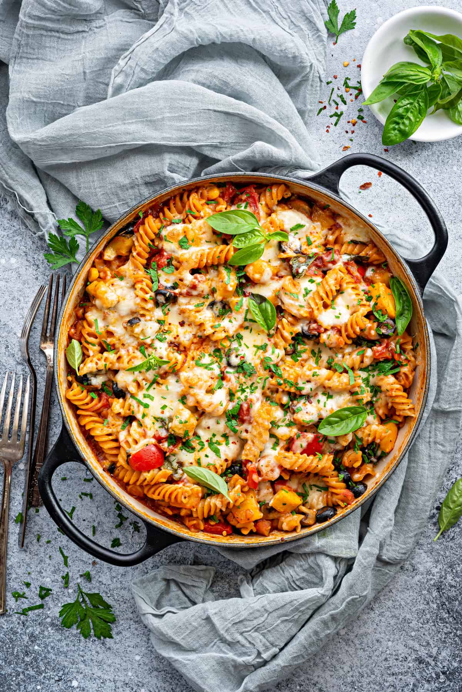

Pasta
Home

Description
Indian pasta, commonly known as Masala Pasta or Desi Pasta, is a vibrant fusion dish that combines classic
Italian pasta with traditional Indian spices and cooking methods. It typically features shapes like penne or
macaroni cooked in a spiced, onion-tomato gravy with vegetables, and is garnished with fresh cilantro.
Core Characteristics
- The Base: The flavor profile relies on a traditional tadka (tempering) or masala base. It
is made by sautéing onions, tomatoes, and ginger-garlic paste with a blend of turmeric, coriander, cumin,
and red chili powder.
- Vegetable Loaded: Unlike traditional Italian pasta, Indian pasta is heavily packed with
local vegetables. Common additions include bell peppers (capsicum), carrots, green peas, green chilies, and
sweet corn.
- Texture & Finish: It is cooked until the pasta thoroughly absorbs the flavorful, semi-dry
masala sauce. Instead of parmesan, it is often topped with processed cheddar cheese, paneer, or fresh
coriander leaves.
Ingredients:
- 250g Pasta (Penne or Fusilli)
- 2 tbsp Oil or Butter
- 1 medium Onion, finely chopped
- 2 Tomatoes, finely chopped
- 1 Capsicum, diced
- 2 Green Chilies, finely chopped
- 4 cloves Garlic, minced
- 1 tsp Red Chili Powder
- 1/2 tsp Turmeric Powder
- 1 tsp Garam Masala
- 1 tsp Pav Bhaji Masala
- 1/2 tsp Black Pepper Powder
- Salt to taste
- 2 tbsp Tomato Ketchup
- Fresh Coriander Leaves for garnish
- Grated Cheese (optional)
Steps:
-
Bring a large pot of salted water to a boil. Add the pasta and cook
according to the package instructions until al dente. Drain and set aside.
-
Heat oil or butter in a large pan over medium heat. Add the chopped onions
and sauté until they become soft and translucent.
-
Add the minced garlic and green chilies. Cook for about a minute until
fragrant.
-
Add the chopped tomatoes and cook until they soften and form a thick masala.
-
Stir in the capsicum and cook for 2–3 minutes, allowing it to remain
slightly crunchy.
-
Add the red chili powder, turmeric powder, garam masala, pav bhaji masala,
black pepper, and salt. Mix well and cook for another minute.
-
Add the tomato ketchup and stir until it is fully incorporated into the
masala.
-
Add the cooked pasta to the pan and toss well until every piece is coated
with the spicy masala mixture.
-
Cook for 2–3 more minutes, stirring occasionally, so the flavors blend
together.
-
Garnish with fresh coriander leaves and grated cheese if desired.
-
Serve hot and enjoy your flavorful Indian-style Masala Pasta.